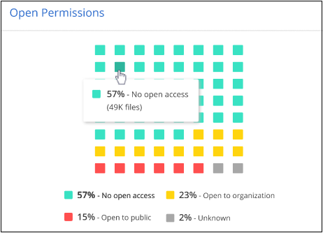
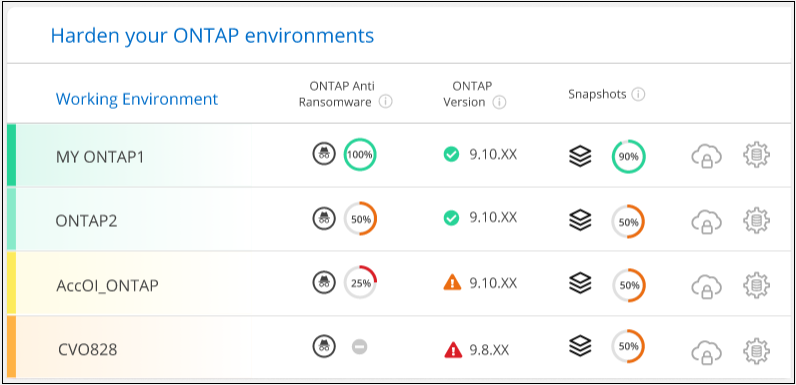
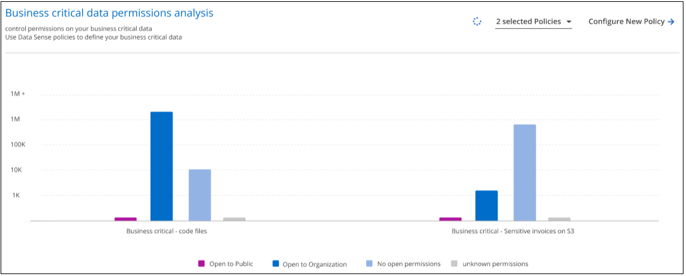

문서 변경 요청
문서 변경 요청 이 페이지 편집
이 페이지 편집 기여하는 방법 자세히 알아보기
기여하는 방법 자세히 알아보기데이터 원본에 대한 사이버 보안 권장 사항 관리
랜섬웨어 보호 대시보드를 사용하여 모든 작업 환경 및 데이터 소스의 사이버 탄력성에 대한 개요를 볼 수 있습니다. 각 영역을 드릴다운하여 자세한 내용과 가능한 해결 방법을 찾을 수 있습니다.

사이버 복원력 맵
Cyber Resilience Map은 대시보드의 주요 영역입니다. 이를 통해 모든 작업 환경과 데이터 소스를 시각적으로 확인하고 관련 사이버 복원력 정보를 볼 수 있습니다.

이 맵은 다음 세 부분으로 구성됩니다.
- 왼쪽 패널
-
모든 데이터 소스에서 서비스가 모니터링 중인 알림 목록을 표시합니다. 또한 사용자 환경에서 활성화된 각 특정 경고의 수도 표시됩니다. 많은 유형의 경고가 있는 경우 이러한 경고를 먼저 해결하기 위한 좋은 이유가 될 수 있습니다.
- 가운데 패널
-
모든 데이터 소스, 서비스 및 Active Directory를 그래픽 형식으로 표시합니다. 건강한 환경에는 녹색 표시기가 있고 경고가 있는 환경에는 빨간색 표시기가 있습니다.
- 오른쪽 패널
-
빨간색 표시기가 있는 데이터 원본을 클릭하면 이 패널에 해당 데이터 원본에 대한 경고가 표시되고 경고 해결을 위한 권장 사항이 제공됩니다. 가장 최근 경고가 먼저 나열되도록 경고가 정렬됩니다. 많은 권장 사항으로 인해 문제를 해결할 수 있는 다른 Cloud Manager 서비스로 안내됩니다.
현재 추적된 알림 및 권장 해결 방법은 다음과 같습니다.
| 경고 | 설명 | 해결 |
|---|---|---|
높은 데이터 암호화 속도가 감지되었습니다 |
데이터 소스에서 암호화된 파일 또는 손상된 파일의 비율이 비정상적으로 증가했습니다. 즉, 지난 7일 동안 암호화된 파일의 비율이 20% 이상 증가했습니다. 예를 들어 파일의 50%가 암호화되면 이 숫자가 60%로 증가하게 됩니다. |
링크를 클릭하여 을 시작합니다 "데이터 감지 조사 페이지". 여기서 Specific_Working Environment_and_Category(암호화 및 손상)_의 필터를 선택하여 모든 암호화 및 손상된 파일의 목록을 볼 수 있습니다. |
광범위한 권한이 있는 중요한 데이터가 발견되었습니다 |
파일에서 중요한 데이터가 검색되고 데이터 소스에서 액세스 권한 수준이 너무 높습니다. |
링크를 클릭하여 을 시작합니다 "데이터 감지 조사 페이지". 여기에서 특정_작업 환경_,민감도 수준(민감한 개인) 및 _열기 권한 _ 에 대한 필터를 선택하여 이 문제가 있는 파일 목록을 볼 수 있습니다. |
Cloud Backup을 사용하여 하나 이상의 볼륨이 백업되지 않습니다 |
작업 환경의 일부 볼륨이 을(를) 사용하여 보호되고 있지 않습니다 "클라우드 백업". |
링크를 클릭하여 Cloud Backup을 시작한 다음 작업 환경에서 백업하지 않는 볼륨을 식별하고 해당 볼륨에 대해 백업을 설정할 것인지 결정할 수 있습니다. |
데이터 소스에 있는 하나 이상의 저장소(볼륨, 버킷 등)가 데이터 센스에 의해 스캔되지 않습니다 |
데이터 원본의 일부 데이터가 을(를) 사용하여 스캔되지 않습니다 "클라우드 데이터 감지" 규정 준수 및 개인 정보 보호 문제를 식별하고 최적화 기회를 찾습니다. |
링크를 클릭하여 데이터 센스를 시작하고 스캔하지 않는 항목에 대한 스캐닝 및 매핑을 활성화합니다. |
온박스 앤티 랜섬웨어는 일부 볼륨에 대해 활성화되지 않습니다 |
온프레미스 ONTAP 시스템의 일부 볼륨에 이 없습니다 "NetApp의 랜섬웨어 방지 기능" 활성화됨. |
링크를 클릭하면 로 리디렉션됩니다 ONTAP 환경 패널을 강화합니다 문제가 있는 작업 환경으로 이동합니다. 문제 해결 방법을 확인할 수 있습니다. |
ONTAP 버전이 업데이트되지 않았습니다 |
클러스터에 설치된 ONTAP 소프트웨어 버전이 의 권장 사항을 따르지 않습니다 "ONTAP 시스템에 대한 NetApp 보안 강화 가이드 를 참조하십시오". |
링크를 클릭하면 로 리디렉션됩니다 ONTAP 환경 패널을 강화합니다 문제가 있는 작업 환경으로 이동합니다. 문제 해결 방법을 확인할 수 있습니다. |
일부 볼륨에 대해 스냅샷이 구성되지 않았습니다 |
작업 환경의 일부 볼륨은 볼륨 스냅샷을 생성하여 보호되지 않습니다. |
링크를 클릭하면 로 리디렉션됩니다 ONTAP 환경 패널을 강화합니다 문제가 있는 작업 환경으로 이동합니다. 문제 해결 방법을 확인할 수 있습니다. |
데이터 민감도에 따른 상위 데이터 저장소
Sensitivity Level을 통한 상위 데이터 리포지토리 _ 패널에는 가장 중요한 항목이 포함된 상위 4개의 데이터 저장소(작업 환경 및 데이터 소스)가 나열됩니다. 각 작업 환경의 막대 차트는 다음과 같이 구분됩니다.
-
중요하지 않은 데이터입니다
-
개인 데이터
-
민감한 개인 데이터

각 섹션 위로 마우스를 가져가면 각 범주의 총 항목 수를 볼 수 있습니다.
각 영역을 클릭하면 데이터 감지 조사 페이지에서 필터링된 결과를 볼 수 있으므로 더 자세히 조사할 수 있습니다.
도메인 관리자 그룹 제어
도메인 관리자 그룹 제어_패널에는 도메인 관리자 그룹에 추가된 최신 사용자가 표시되어 모든 사용자가 해당 그룹에서 허용되는지 확인할 수 있습니다. 이(가) 있어야 합니다 "글로벌 Active Directory 통합" 클라우드 데이터 센스로 들어가 이 패널이 활성화되도록 합니다.

기본 관리 그룹에는 "관리자", "도메인 관리자", "엔터프라이즈 관리자", "엔터프라이즈 키 관리자" 및 "키 관리자"가 포함됩니다.
열려 있는 권한 유형에 따라 데이터가 나열됩니다
Open Permissions_패널은 스캔되는 모든 파일에 대해 존재하는 각 권한 유형의 백분율을 표시합니다. 차트는 데이터 센스에서 제공되며 다음과 같은 유형의 권한을 보여 줍니다.
-
개방 액세스 없음
-
조직에 열기
-
공개
-
알 수 없는 액세스

각 섹션 위로 마우스를 가져가면 각 범주의 파일 백분율 및 총 개수를 볼 수 있습니다.
각 영역을 클릭하면 데이터 감지 조사 페이지에서 필터링된 결과를 볼 수 있으므로 더 자세히 조사할 수 있습니다.
암호화된 파일에 의해 데이터가 나열됩니다
_Encrypted Files_패널은 시간이 지남에 따라 암호화되는 파일의 비율이 가장 높은 상위 4개의 데이터 소스를 표시합니다. 일반적으로 암호로 보호된 항목입니다. 이를 위해 지난 7일 동안의 암호화 속도를 비교하여 어떤 데이터 소스가 20% 이상 증가하는지 확인합니다. 이 용량이 증가하면 랜섬웨어가 이미 시스템을 공격하게 됩니다.

데이터 소스 중 하나에 대한 행을 클릭하여 데이터 감지 조사 페이지에서 필터링된 결과를 보고 더 자세히 조사할 수 있습니다.
ONTAP 시스템 강화 상태
ONTAP 환경 _ 패널 은(는) 에 따라 배포가 얼마나 안전한지 추적하는 ONTAP 시스템의 특정 설정 상태를 제공합니다 "ONTAP 시스템에 대한 NetApp 보안 강화 가이드 를 참조하십시오" 로 이동합니다 "ONTAP의 랜섬웨어 방지 기능" 비정상적인 활동을 사전에 감지하여 경고합니다.
권장사항을 검토한 후 잠재적 문제를 어떤 방식으로 해결할 것인지 결정할 수 있습니다. 다음 단계에 따라 클러스터의 설정을 변경하거나, 변경 사항을 다른 시간으로 연기하거나, 제안을 무시할 수 있습니다.
이 패널은 현재 NetApp ONTAP 시스템용 온프레미스 ONTAP, Cloud Volumes ONTAP 및 Amazon FSx를 지원합니다.

추적 중인 설정은 다음과 같습니다.
| 강화 목표 | 설명 | 해결 |
|---|---|---|
ONTAP의 랜섬웨어 방지 기술 |
온박스 안티 랜섬웨어가 활성화된 볼륨의 비율입니다. 사내 ONTAP 시스템에만 적용됩니다. 녹색 상태 아이콘은 볼륨의 85% 이상이 활성화되어 있음을 나타냅니다. 노란색은 40-85%가 활성화되었음을 나타냅니다. 빨간색은 40% 미만임을 나타냅니다. |
"볼륨에서 안티 랜섬웨어를 활성화하는 방법을 확인하십시오" System Manager 사용: |
ONTAP 버전 |
클러스터에 설치된 ONTAP 소프트웨어의 버전입니다. 녹색 상태 아이콘은 버전이 현재 버전임을 나타냅니다. 노란색 아이콘은 클러스터가 1개 또는 2개의 패치 버전이나 온프레미스 시스템의 경우 1개의 부 버전 뒤이거나 Cloud Volumes ONTAP의 경우 1개의 주 버전 뒤임을 나타냅니다. 빨간색 아이콘은 클러스터가 3개의 패치 버전 또는 2개의 부 버전 또는 온프레미스 시스템의 경우 1개의 주 버전 또는 Cloud Volumes ONTAP의 경우 2개의 주 버전 뒤임을 나타냅니다. |
"사내 클러스터를 업그레이드하는 가장 좋은 방법을 확인하십시오" 또는 "Cloud Volumes ONTAP 시스템". |
스냅샷 수 |
데이터 볼륨에 대해 활성화된 스냅샷 기능과 스냅샷 복사본이 있는 볼륨의 비율은 얼마입니까? 녹색 상태 아이콘은 볼륨의 85% 이상이 스냅샷을 활성화했음을 나타냅니다. 노란색은 40-85%가 활성화되었음을 나타냅니다. 빨간색은 40% 미만임을 나타냅니다. |
"온프레미스 클러스터에서 볼륨 스냅샷을 활성화하는 방법을 알아보십시오" 또는 "Cloud Volumes ONTAP 시스템에". |
중요한 비즈니스 데이터에 대한 사용 권한의 상태입니다
비즈니스 크리티컬 데이터 권한 분석 패널은 비즈니스에 중요한 데이터의 사용 권한 상태를 표시합니다. 이를 통해 비즈니스 크리티컬 데이터를 얼마나 잘 보호하고 있는지 빠르게 평가할 수 있습니다.

처음에 이 패널은 선택한 기본 정책을 기반으로 데이터를 표시합니다. 하지만 가장 중요한 비즈니스 데이터를 보기 위해 만든 가장 중요한 데이터 감지 정책 2개를 선택할 수 있습니다. 자세한 내용은 를 참조하십시오 "데이터 센스를 사용하여 정책을 만드십시오".
그래프에는 정책의 기준을 충족하는 모든 데이터에 대한 사용 권한 분석이 표시됩니다. 다음과 같은 항목 수가 나열됩니다.
-
공개 권한으로 열기 – Data Sense에서 공개라고 여기는 항목입니다
-
조직 권한에 대한 공개 – Data Sense가 조직에 개방적이라고 여기는 항목입니다
-
열린 권한 없음 – Data Sense에서 열린 권한이 없는 것으로 간주하는 항목입니다
-
알 수 없는 권한 – Data Sense에서 알 수 없는 사용 권한으로 간주하는 항목입니다
차트의 각 막대 위로 마우스를 가져가면 각 범주의 결과 수를 볼 수 있습니다. 막대를 클릭하면 열려 있는 권한이 있는 항목과 파일 권한을 조정해야 하는지 여부를 자세히 조사할 수 있도록 데이터 감지 조사 페이지가 표시됩니다.
중요한 비즈니스 데이터의 백업 상태입니다
Backup Status_panel은 Cloud Backup을 사용하여 서로 다른 범주의 데이터를 보호하는 방법을 보여줍니다. 랜섬웨어 공격으로 인해 복구해야 할 경우에 대비하여 가장 중요한 범주의 데이터가 포괄적으로 백업되는 방식을 식별합니다. 이 데이터는 작업 환경에서 특정 범주의 항목 수를 시각적으로 나타낸 것입니다.
Cloud Backup_and_scanned를 사용하여 이미 백업되고 있는 온프레미스 ONTAP 및 Cloud Volumes ONTAP 작업 환경만 클라우드 데이터 센스를 사용하여 표시됩니다.

처음에 이 패널은 선택한 기본 범주를 기반으로 데이터를 표시합니다. 그러나 추적할 데이터 범주를 선택할 수 있습니다. 예를 들어 코드 파일, 계약 등을 선택할 수 있습니다. 의 전체 목록을 참조하십시오 "범주" 클라우드 데이터 센스를 통해 작업 환경을 구축할 수 있습니다. 그런 다음 최대 4개의 범주를 선택합니다.
데이터가 채워진 후 차트의 각 사각형 위로 마우스를 가져가면 작업 환경의 같은 범주에 있는 모든 파일에서 백업된 파일 수가 표시됩니다. 녹색 사각형은 파일 중 85% 이상이 백업되고 있음을 의미합니다. 노란색 정사각형은 파일 중 40%~85%가 백업되고 있음을 의미합니다. 빨간색 사각형은 40% 이하의 파일이 백업되고 있음을 의미합니다.
행 끝에 있는 Cloud Backup 버튼을 클릭하여 Cloud Backup 인터페이스로 이동하여 각 작업 환경에서 더 많은 볼륨에 대한 백업을 활성화할 수 있습니다.